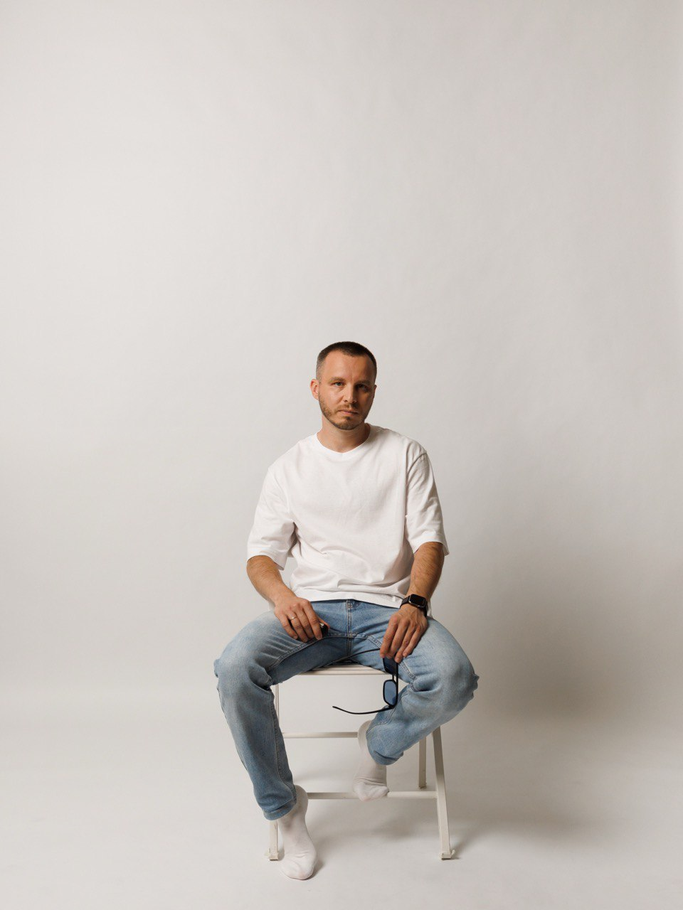

Развиваю digital-каналы для B2B и IT-продуктов: посадочные страницы, SEO, контекстную рекламу, аналитику и MQL/SQL-воронку. Сильнее всего раскрываюсь в сложных нишах, где нужно быстро разобраться в продукте, рынке и технической реализации.

* В публичной версии портфолио часть показателей округлена или обобщена, чтобы не раскрывать внутренние данные работодателя.
Я не просто настраиваю рекламу — я выстраиваю систему привлечения клиентов, в которой каждый этап измерим и управляем.
Выстраиваю MQL/SQL-воронку с нуля: от настройки целей в Метрике до отчётов в Roistat. Отслеживаю не клики, а реальные лиды и их качество.
Контролирую агентства и фрилансеров, провожу аудит их работы, принимаю решения о замене. Оптимизирую расходы без потери объёма заявок.
Могу сам собрать семантику, написать текст, сверстать страницу и настроить аналитику. Говорю с разработкой на одном языке.
В B2B результат часто зависит не от одного канала, а от связки: спрос, посадочная страница, форма, аналитика, CRM, квалификация заявки и обратная связь от продаж. Технический и продажный опыт помогает мне смотреть на эту систему целиком: находить узкие места, быстрее запускать гипотезы и меньше зависеть от подрядчиков там, где задачу можно закрыть самостоятельно.
Смотрю не только на визиты и клики, а на MQL, SQL, CPL, качество заявок и связь маркетинга с продажами.
Могу оценить сложность задачи, поставить понятное ТЗ и при необходимости сам закрыть часть технической реализации.
Работал в B2B-продажах, поэтому знаю, какие заявки помогают менеджерам, а какие просто создают шум в CRM.
Могу пройти путь от семантики и структуры до текста, верстки, аналитики и оценки результата без полной зависимости от подрядчиков.
Я не классический маркетолог, который всю карьеру занимался только рекламой или контентом.
Я пришёл в маркетинг через B2B-продажи и разработку. Сначала общался с клиентами напрямую, слышал реальные возражения и видел, какие заявки помогают продажам, а какие просто создают шум в CRM.
Позже добавился технический бэкграунд: сайты, Laravel, вёрстка, формы, интеграции и аналитика. Поэтому мне проще работать на стыке маркетинга, продукта и разработки — я понимаю не только «что нужно бизнесу», но и как это реализовать технически.
Мне интересны сложные B2B-продукты, где нужно быстро разобраться в рынке, продукте, технических ограничениях и логике принятия решений. Там, где нельзя просто «залить трафик», а нужно понять, почему клиент вообще должен оставить заявку.
В работе ценю системность, честность в цифрах и здравый смысл. Не люблю активность ради активности: если канал не работает — его нужно отключать или менять подход. Если аналитика врёт — сначала чинить аналитику, а уже потом делать выводы.
Я знаю, как выглядит живой разговор с ЛПР: собственником, руководителем автопарка, механиком, логистом. Поэтому в маркетинге стараюсь писать не абстрактные «продающие тексты», а формулировать офферы через реальные боли, возражения и критерии выбора.
Технический опыт помогает быстрее запускать гипотезы: я понимаю, что можно сделать быстро, что потребует разработки, как поставить задачу и где лучше не усложнять. При необходимости могу сам сверстать страницу, поправить логику формы или разобраться в интеграции.
Для меня важны не только визиты и клики. Я смотрю на MQL, SQL, стоимость заявки, качество лида и то, как маркетинг связан с продажами. Хороший результат — это не «запустили кампанию», а понятная система, которая даёт бизнесу управляемый поток заявок.
Полный цикл B2B-маркетинга — от сбора семантики до анализа воронки и технической доработки сайта.
Сбор семантики, кластеризация, SEO-карта, тех. аудит в Labrika, Яндекс.Вебмастер, Google Search Console, перелинковка, микроразметка, Miralinks.
Яндекс.Директ: поиск, ретаргетинг, бренд, конкуренты. Контроль подрядчиков, управление бюджетом, анализ CPL и SQL.
От семантики и структуры до текста и вёрстки. Оффер, доказательства, CTA, FAQ, перелинковка — под конкретный B2B-сегмент.
Яндекс.Метрика, цели, конверсии, Calltouch, Roistat, Bitrix24. Ежемесячная отчётность для руководства. Контроль качества заявок.
Настройка процесса квалификации лидов, скоринг, согласование критериев приёма заявок с отделом продаж и контроль качества данных в CRM.
Нейросети для структуры страниц, SEO-контента, FAQ, микроразметки, экспертных статей. Адаптация под нейровыдачу Яндекса (топ-3).
Запуск сайтов с нуля для нескольких рынков СНГ: структура, контент, аналитика, SEO. Выход в топ-3 по ключевым SEO-кластерам.
PHP, Laravel, MySQL, JavaScript, Vue, Git, HTML, CSS, Tailwind, Bootstrap, Tilda, WordPress. Верстка, доработки, интеграции, БД.
Организация участия в отраслевых выставках: стенд, материалы, подрядчики и поддержка продаж на этапе подготовки. Смотрю на выставку как на B2B-точку контакта с рынком.
SEO, performance, посадочные страницы, аналитика, brand awareness и B2B-точки контакта с рынком.
Проблема: Коммерческие посадочные уже созданы, нужен новый источник органического роста. Что сделал: Внедрил блог, организовал производство SEO-контента, настроил перелинковку статей с коммерческими страницами. Результат: Органический трафик в пике вырос почти в 2 раза, блог стал стабильным каналом привлечения на раннем этапе B2B-воронки.
Проблема: Контекстная реклама была слабо управляемой, подрядчик допускал системные ошибки, CPL и стоимость SQL были выше рынка. Что сделал: Провёл аудит, выявил ошибки, инициировал замену подрядчика. Глубоко участвовал в сборе семантического ядра под специфику B2B-продукта. Результат: CPL снизился более чем на 40%, стоимость SQL — почти в 2 раза, рекламный бюджет сокращён примерно на 50% без потери объёма заявок.
Проблема: Появился нишевый B2B-спрос в транспортной сфере — нужна была посадочная страница с быстрым запуском через несколько каналов. Что сделал: Создал посадочную страницу под конкретный сегмент, запустил поисковую контекстную рекламу, дополнительно разместил PR-материал в отраслевом медиа. Результат: Посадочная страница принесла 150+ MQL. Высокий процент заявок прошёл квалификацию в SQL. PR-канал дал контакты по CPL ниже контекста.
Проблема: Компания выходила на новые рынки СНГ — digital-направления не было, всё нужно было строить с нуля. Что сделал: Запустил сайты с нуля: структура, посадочные страницы, контент, SEO, аналитика. Адаптировал подход под специфику каждого рынка. Результат: Конверсия в MQL на новых рынках составила около 4%. Сайты вышли в топ-3 по ключевым SEO-кластерам на нескольких рынках СНГ.
Проблема: Часть заявок некорректно классифицировалась в CRM, из-за чего аналитика по воронке была неточной. Что сделал: Выявил проблему, совместно с аналитиком и разработчиком переработал процесс обработки заявок, настроил корректную классификацию. Результат: Повторные и новые обращения учитываются раздельно. Качество данных по воронке и точность отчётов существенно повысились.
Проблема: У корпоративного Instagram-аккаунта была небольшая база (~1 300 подписчиков). Стандартный продуктовый контент не давал охватов. Что сделал: Протестировал развлекательные Reels-форматы, рассчитанные на органическое распространение за пределы текущей аудитории. Результат: Один ролик собрал почти 5 млн просмотров, ещё несколько — сотни тысяч. Канал не стал источником заявок (brand awareness, не лидогенерация), но сработал на узнаваемость бренда.
Проблема: Компания участвовала в отраслевых выставках, но отсутствовал системный маркетинговый подход к подготовке. Что сделал: Организовал участие как маркетинговый проект: стенд, материалы, коммуникации, подрядчики, поддержка продаж. Выставки — GITEX (Марокко, Дубай), TransRussia и CTO Expo (Москва). Результат: По отдельным мероприятиям собраны десятки и сотни B2B-контактов, которые передавались в отдел продаж для дальнейшей обработки. Выставки стали не «присутствием ради присутствия», а работающей B2B-точкой контакта с рынком.
От поискового запроса до готовой страницы с аналитикой — каждый этап контролирую лично.
Wordstat, Topvisor, Labrika — собираю запросы, оцениваю частотность и конкурентность.
Разделяю запросы по типу: коммерческие, информационные, навигационные, трансакционные.
Изучаю структуру выдачи, лидеров ниши, их офферы и посадочные страницы.
Аудитория, боль, оффер, доказательства, CTA, FAQ, перелинковка — каркас страницы.
Пишу с помощью AI, затем вручную проверяю и дорабатываю. Факты, цифры, возражения.
Собираю прототип из готовых блоков или готовлю ТЗ дизайнеру с чёткой структурой.
Верстаю сам (Laravel, Blade, HTML/CSS) или ставлю задачу разработчику.
Настраиваю или проверяю цели, события, коллтрекинг, связку с CRM.
Анализирую трафик, MQL, SQL, CPL и качество заявок. Делаю выводы и оптимизирую.
Я не просто ставлю задачи разработчикам — я могу сам оценить сложность, предложить решение и при необходимости закрыть задачу своими руками.
До маркетинга работал в B2B-продажах. Знаю, как принимают решения в компаниях с коммерческим транспортом, и умею говорить с ЛПР на их языке.
Грузоперевозки, строительство, спецтехника, производство, компании с коммерческим автопарком.
Собственник бизнеса, руководитель компании, ответственный за автопарк, завгар, главный механик, логист.
Отсутствие контроля транспорта, слив топлива, «левые» рейсы, высокие затраты на топливо, риски с техникой и водителями, compliance и обязательные требования.
Я понимаю, как формируется потребность, какие возражения возникают у ЛПР и на какие триггеры они реагируют. Это позволяет создавать офферы и контент, которые действительно конвертируют, а не просто «про маркетинг».
Каждую посадочную страницу и каждое объявление я проверяю вопросом: «Купил бы я это, будь я начальником автопарка?»
Технологический стек, который использую ежедневно для сбора данных, анализа, запуска кампаний и отчётности.
Wordstat, Topvisor, Labrika, Яндекс.Вебмастер, Google Search Console, Miralinks
Яндекс.Метрика, Calltouch, Roistat, Bitrix24, цели, конверсии, отчёты
Яндекс.Директ, поисковая реклама, ретаргетинг, брендовые кампании
AI-инструменты для структуры страниц, контента, офферов, анализа конкурентов, прототипирования, быстрого создания MVP и проверки гипотез. Использую ChatGPT, Claude, Codex, OpenCode и другие инструменты под конкретную задачу.
Ищу роль B2B Digital / Growth Marketing Manager или руководителя digital-направления в B2B, IT или сложной продуктовой нише. Интересны задачи, где нужно не просто вести отдельный канал, а выстраивать систему привлечения: SEO, посадочные страницы, performance, аналитика, MQL/SQL-воронка, взаимодействие с продажами и разработкой.
B2B Digital Marketing Manager, Growth Marketing Manager, Product Marketing Manager, руководитель digital-направления, SEO/Growth-маркетолог.
Рост входящих заявок, развитие SEO, переработка посадочных страниц, настройка аналитики, оптимизация CPL/SQL, запуск новых направлений и рынков.
Офис в Ставрополе или удалённая работа по РФ. Полный день.
Рассматриваю работу в офисе в Ставрополе или удалённые позиции по РФ в B2B, IT и сложных продуктовых нишах: growth marketing, digital-маркетинг, SEO/growth, product marketing, руководитель digital-направления.
Финансовые ожидания: обсуждаются в зависимости от задач, зоны ответственности и формата работы. Ориентир — от 150 тыс. ₽ на руки. Формат: офис в Ставрополе или удалённая работа по РФ.
Коротко обо мне
B2B-маркетолог, который понимает SEO, контекст, посадочные страницы, аналитику, воронку MQL/SQL и Laravel. Работаю на стыке маркетинга, продаж, продукта и разработки.